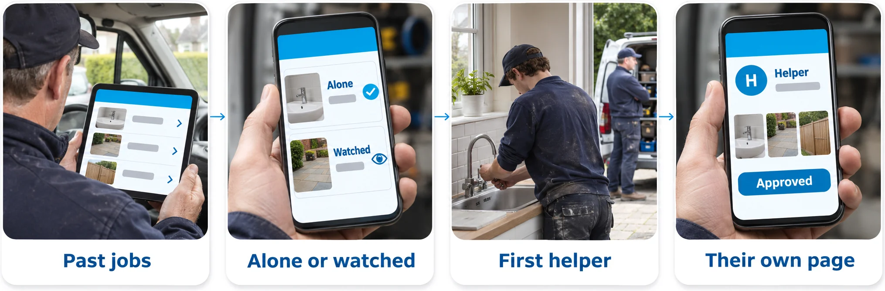
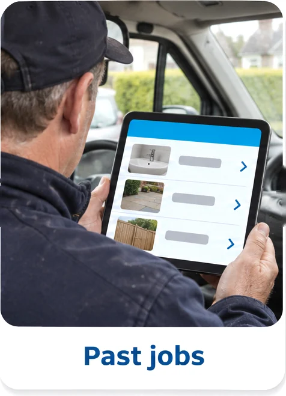
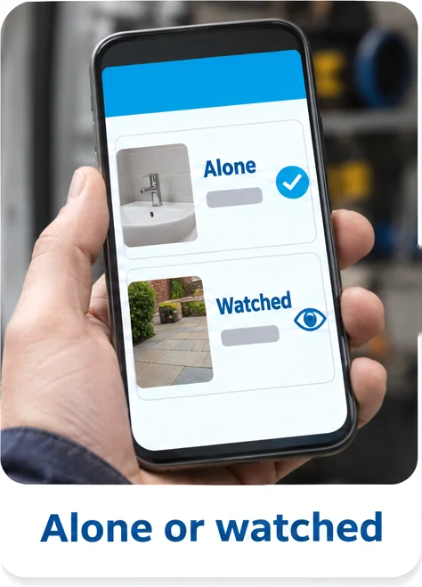
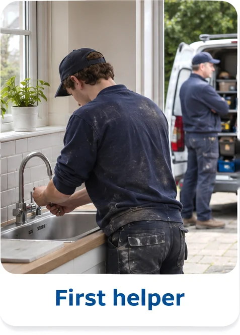

Second Truck Sandbox
TeamHarder, but possible

- 1

I look through my past jobs on a tablet.
- 2

Each job shows if a helper could do it alone or watched.
- 3

The helper takes a first job while I stay at the van.
- 4

The helper gets their own page of approved work.
Problem
I cannot hire help without watching every job myself.
What you gain
A helper takes the jobs I approved, so I can book more work.
Brings the next customer
Customers meet the helper through my approved examples, so they trust the second truck.
Why build it
Providers cannot grow without help, and this makes the first hire safe.
Who has it
Solo owners ready for a first helper.

Also inside
- First solo job check
- Crew trust passed along
- Helper's own page